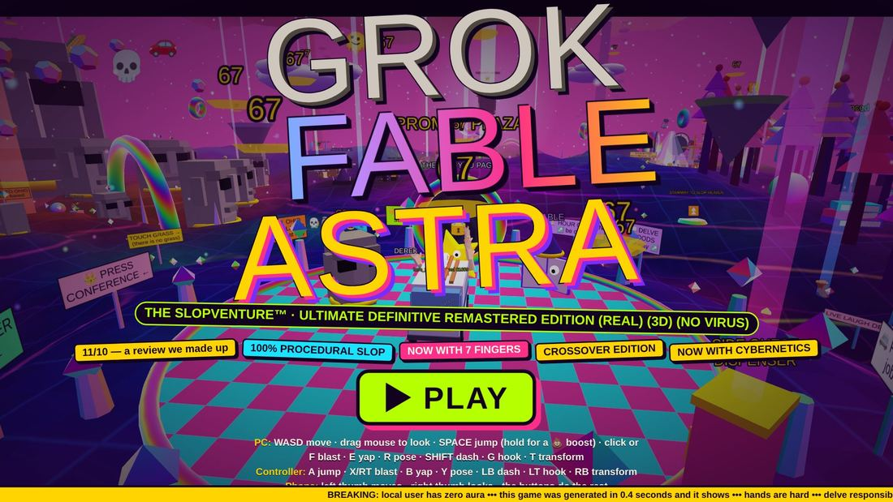
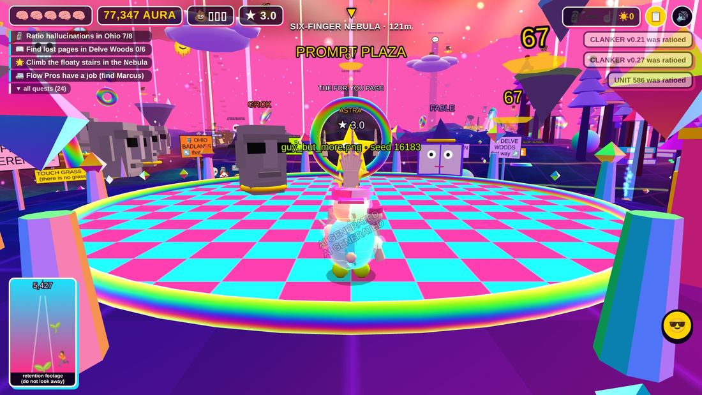
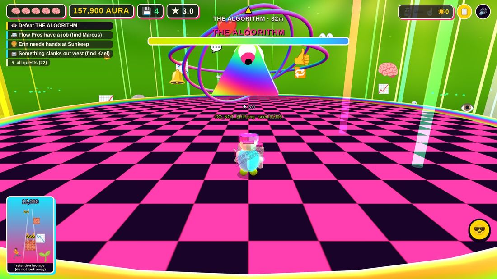
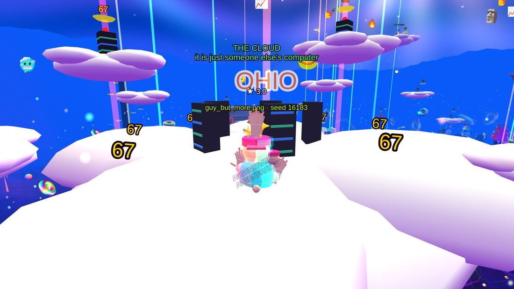
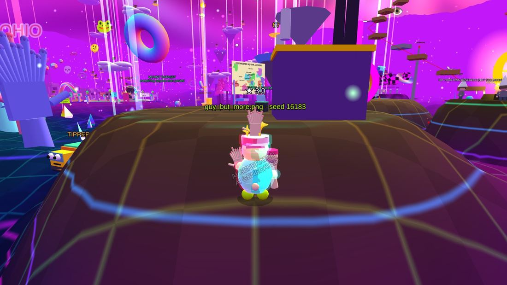
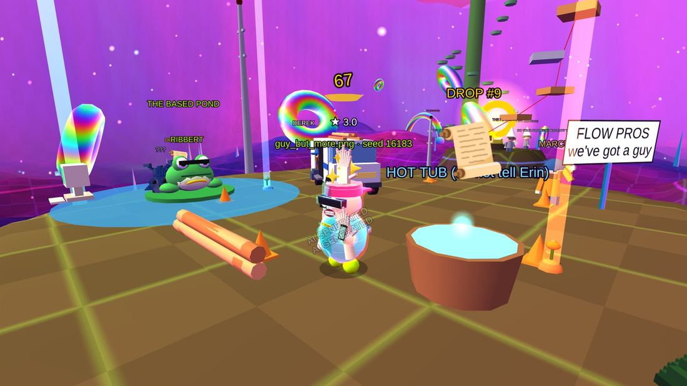
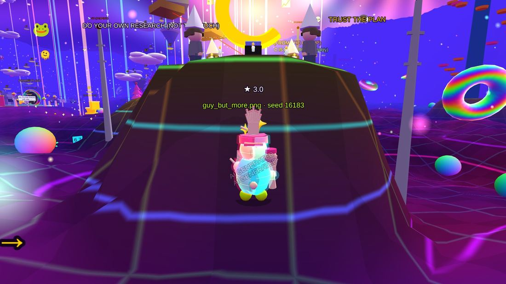
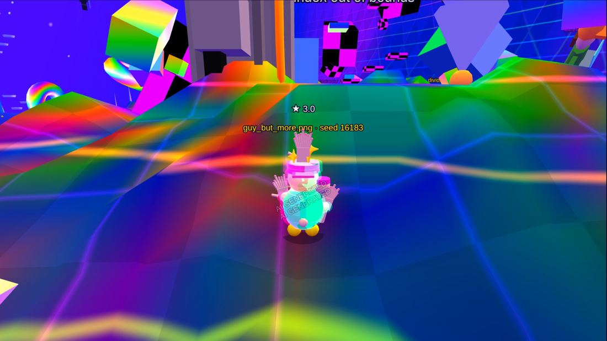
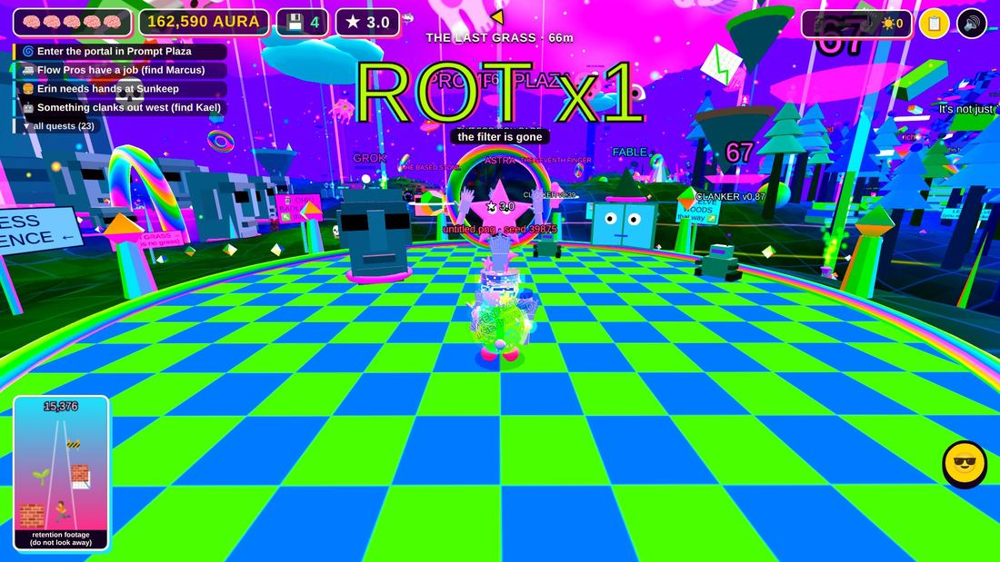
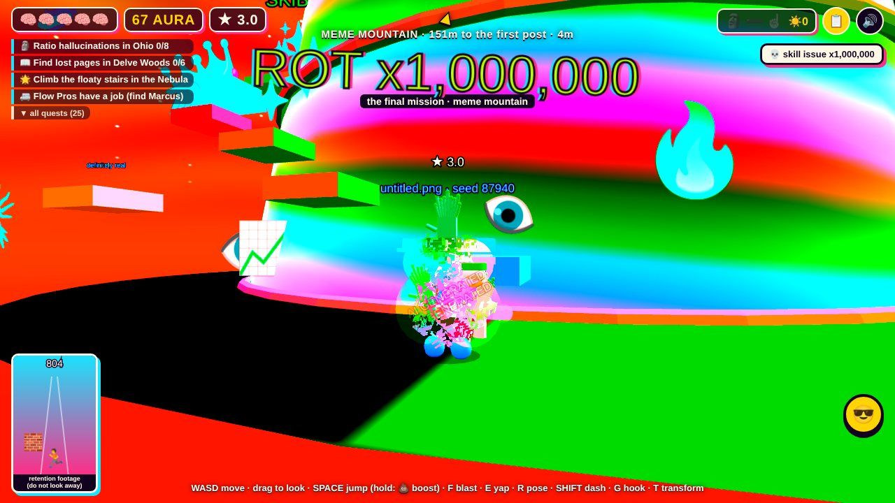

<title>Grok Fable Astra State of the Game</title>
<meta name="claude:viewport-fit-sides" content="cover">
<link rel="preconnect" href="https://fonts.googleapis.com">
<link href="https://fonts.googleapis.com/css2?family=Barlow+Condensed:wght@500;600;700&family=IBM+Plex+Sans:wght@400;500;600&display=swap" rel="stylesheet">
<style>
/* Layout idea: the same inspection sheet as the Guttercrown report, so the two read side by side. Lime marks the slop. */
:root{
  color-scheme: dark;
  --page:#121016; --surface:#1a1820; --raise:#24212c; --line:#35313f;
  --ink:#f1eff5; --ink2:#c4c0cf; --muted:#8f8a9c;
  --gold:#c6f135;
  --c1:#3987e5; --c2:#d95926; --c3:#199e70; --c4:#c98500; --c5:#d55181; --c6:#9085e9; --c7:#c3c2b7; --c8:#e66767;
  --good:#0ca30c; --warn:#fab219; --crit:#e66767;
  --display:'Barlow Condensed','Arial Narrow',sans-serif;
  --body:'IBM Plex Sans',system-ui,-apple-system,'Segoe UI',sans-serif;
}
*{box-sizing:border-box}
html{-webkit-text-size-adjust:100%}
body{margin:0;background:var(--page);color:var(--ink);font-family:var(--body);font-size:16px;line-height:1.55}
main{max-width:860px;margin:0 auto;padding-block:28px 80px;padding-left:max(18px,env(safe-area-inset-left,0px));padding-right:max(18px,env(safe-area-inset-right,0px));display:flex;flex-direction:column;gap:44px}
h1,h2,h3{font-family:var(--display);text-wrap:balance;margin:0;line-height:1.1;letter-spacing:.01em}
h1{font-size:46px;font-weight:700;text-transform:uppercase;color:var(--gold)}
h2{font-size:30px;font-weight:600;text-transform:uppercase;padding-bottom:8px;border-bottom:1px solid var(--line)}
h3{font-size:21px;font-weight:600}
p{margin:0;max-width:68ch}
a{color:var(--gold)}
section{display:flex;flex-direction:column;gap:16px}
.lede{font-size:18px;color:var(--ink2)}
.meta{color:var(--muted);font-size:13px}
.tiles{display:grid;grid-template-columns:repeat(auto-fit,minmax(130px,1fr));gap:10px}
.tile{background:var(--surface);border:1px solid var(--line);border-radius:6px;padding:12px 14px}
.tile b{display:block;font-family:var(--display);font-size:34px;font-weight:600;line-height:1;font-variant-numeric:tabular-nums}
.tile span{font-size:13px;color:var(--ink2)}
.card{background:var(--surface);border:1px solid var(--line);border-radius:6px;padding:16px}
.grid2{display:grid;grid-template-columns:repeat(auto-fit,minmax(280px,1fr));gap:12px}
ul{margin:0;padding-left:20px;display:flex;flex-direction:column;gap:7px}
li{max-width:68ch}
.scroll{overflow-x:auto;border:1px solid var(--line);border-radius:6px;background:var(--surface)}
.scroll svg{display:block}
.hint{font-size:12px;color:var(--muted)}
table{border-collapse:collapse;width:100%;font-size:14px}
th,td{text-align:left;padding:8px 10px;border-bottom:1px solid var(--line);vertical-align:top}
th{font-family:var(--display);font-size:15px;font-weight:600;letter-spacing:.04em;text-transform:uppercase;color:var(--ink2);white-space:nowrap}
.chip{display:inline-block;font-size:12px;font-weight:600;padding:1px 8px;border-radius:99px;border:1px solid currentColor;white-space:nowrap}
.c-good{color:#4cc24c}.c-warn{color:var(--warn)}.c-crit{color:var(--crit)}.c-own{color:var(--gold)}
.legend{display:flex;flex-wrap:wrap;gap:6px 16px;font-size:13px;color:var(--ink2)}
.legend i{display:inline-block;width:11px;height:11px;border-radius:2px;margin-right:6px;vertical-align:-1px}
.score{display:grid;grid-template-columns:minmax(120px,190px) 1fr 34px;gap:4px 10px;align-items:center;font-size:14px}
.score .bar{height:10px;background:var(--raise);border-radius:5px;overflow:hidden}
.score .bar i{display:block;height:100%;border-radius:5px}
.score .n{font-variant-numeric:tabular-nums;color:var(--ink2);text-align:right}
.score .why{grid-column:1/-1;font-size:13px;color:var(--muted);margin:-2px 0 8px}
.lanes td,.lanes th{text-align:center;padding:6px 4px;font-size:12px}
.lanes td:first-child,.lanes th:first-child{text-align:left;white-space:nowrap;font-size:13px;padding-right:12px}
.lanes td{border:2px solid var(--surface)}
.lanes .on{background:rgba(198,241,53,.75)}
.lanes .if{background:repeating-linear-gradient(135deg,rgba(224,176,74,.55) 0 5px,rgba(224,176,74,.15) 5px 10px)}
.lanes .bg{background:rgba(224,176,74,.22)}
.vers{display:flex;flex-wrap:wrap;gap:4px}
.vers span{font-size:11px;font-weight:600;padding:3px 6px;border-radius:3px;color:#0b0b0b;font-variant-numeric:tabular-nums}
.shots{display:grid;grid-template-columns:repeat(auto-fit,minmax(250px,1fr));gap:12px}
figure{margin:0;background:var(--surface);border:1px solid var(--line);border-radius:6px;overflow:hidden}
figure img{display:block;width:100%;height:auto;max-width:100%}
figcaption{padding:9px 12px;font-size:13px;color:var(--ink2)}
figcaption b{color:var(--ink)}
.phase{display:grid;grid-template-columns:44px 1fr;gap:12px;padding:14px 0;border-bottom:1px solid var(--line)}
.phase .n{font-family:var(--display);font-size:34px;font-weight:700;color:var(--gold);line-height:1}
.phase p{color:var(--ink2);font-size:14.5px}
.sev{font-size:11px;font-weight:700;letter-spacing:.05em;text-transform:uppercase}
.flag{border-left:3px solid var(--crit);background:var(--surface);border-radius:0 6px 6px 0;padding:14px 16px;display:flex;flex-direction:column;gap:10px}
.flow{display:flex;flex-direction:column;gap:6px}
.step{display:grid;grid-template-columns:30px 1fr;gap:10px;align-items:start;background:var(--surface);border:1px solid var(--line);border-radius:6px;padding:10px 12px}
.step .k{font-family:var(--display);font-size:22px;font-weight:700;color:var(--gold);line-height:1.1}
.step p{font-size:14.5px;color:var(--ink2)}
.step b{color:var(--ink)}
.branch{margin-left:40px;border-left:2px dashed var(--muted);padding-left:12px;font-size:14px;color:var(--ink2)}
@media (max-width:560px){h1{font-size:36px}h2{font-size:25px}.branch{margin-left:16px}}
.stage{display:flex;flex-direction:column;gap:8px;padding:14px 0;border-bottom:1px solid var(--line)}
.stage .when{font-family:var(--display);font-size:17px;letter-spacing:.05em;text-transform:uppercase;color:var(--gold)}
.stage .row{display:grid;grid-template-columns:repeat(auto-fit,minmax(200px,1fr));gap:8px}
.stage .row img{display:block;width:100%;height:auto;border-radius:4px;border:1px solid var(--line)}
svg text{font-family:var(--body)}
table.wide{min-width:1080px}table.wide th,table.wide td{font-size:13px}
.tiles.six{grid-template-columns:repeat(3,1fr)}.tiles.five{grid-template-columns:repeat(5,1fr)}@media (max-width:640px){.tiles.six,.tiles.five{grid-template-columns:repeat(2,1fr)}}
.num{font-variant-numeric:tabular-nums;text-align:right}
.nowrap{white-space:nowrap}
details{background:var(--surface);border:1px solid var(--line);border-radius:6px;padding:10px 12px}
details summary{cursor:pointer;font-family:var(--display);font-size:19px;letter-spacing:.02em}
details[open] summary{margin-bottom:8px}
details .scroll{border:0}
.classes{display:grid;grid-template-columns:repeat(auto-fit,minmax(300px,1fr));gap:12px}
.cls h3{margin-bottom:6px}
table.kv th{width:9.5em;font-size:13px;text-transform:none;letter-spacing:0;color:var(--muted);white-space:normal}
table.kv td{font-size:13.5px}
.divider{display:flex;align-items:center;gap:12px;color:var(--gold);font-family:var(--display);font-size:20px;text-transform:uppercase;letter-spacing:.06em}
.divider::before,.divider::after{content:"";flex:1;height:1px;background:var(--gold);opacity:.5}
code{font-size:.92em}
.gcards{display:grid;grid-template-columns:repeat(auto-fit,minmax(290px,1fr));gap:12px;margin-bottom:8px}
.gcard{background:var(--surface);border:1px solid var(--line);border-radius:8px;padding:14px;min-width:0}
.gtop{display:flex;gap:12px;align-items:center;margin-bottom:8px}
.glet{flex:none;width:52px;height:52px;border-radius:8px;display:grid;place-items:center;font-family:var(--display);font-size:26px;font-weight:700;color:#141210}
.g-a{background:var(--c3)}.g-b{background:var(--c1)}.g-c{background:var(--c4)}.g-d{background:var(--c8)}.g-i{background:var(--line);color:var(--ink)}
.gname{font-size:16px}.gmeta{display:flex;gap:6px;flex-wrap:wrap;margin-top:4px;font-size:12px}
.was{color:var(--muted)}.was.up{color:var(--c3)}.was.down{color:var(--c8)}
.chip.pr-high{background:color-mix(in srgb,var(--c8) 22%,transparent)}.chip.pr-medium{background:color-mix(in srgb,var(--c4) 22%,transparent)}.chip.pr-low{background:color-mix(in srgb,var(--c7) 18%,transparent)}
.gev{font-size:13.5px;margin:0 0 8px;color:var(--ink2)}.grec{font-size:13.5px;margin:0}
.flag h3{color:var(--ink)}
.flag p{color:var(--ink2);font-size:14.5px}
.shots figure{min-width:0}

</style>
<main>

<header style="display:flex;flex-direction:column;gap:12px">
  <div class="meta">North Coast Studios · 20 November 2026 · first report, for Version 14 of the live build, with a report card</div>
  <h1>Grok Fable Astra<br>State of the Game</h1>
  <p class="lede">Grok Fable Astra went from nothing to a complete 3D platform adventure in one day: 26 places, 15 guest characters, three endings that escalate from a boss to a mountain of memes, and a moveset that now has to be earned. It is funnier and larger than a one-day game should be. It has also never been played by a person on real hardware, and it cannot be sold under its current name.</p>
  <p class="meta">Sources: the live build and the Game repo (<code>grok-fable-astra/</code> on <code>claude/festive-hawking-dorqg0</code>). Counts were read out of the running game by script; screenshots are from scripted runs, not hand play. Grades are judgment, not measurement.</p>
</header>

<section id="grades">
<h2>Report card</h2>
<p>Every part of the game on one scale, with the evidence for the grade and what would raise it. These are my judgment from the code, the live build and scripted runs. “I” means incomplete: the part exists but has never been checked the only way that counts.</p>
<div class="tiles five"><div class="tile"><b>B−</b><span>overall, 2.83 on a 4-point scale</span></div><div class="tile"><b>3</b><span>A grades</span></div><div class="tile"><b>11</b><span>B grades</span></div><div class="tile"><b>5</b><span>C and D grades</span></div><div class="tile"><b>2</b><span>incomplete: sound, controller</span></div></div>
<h3>Play</h3><div class="gcards"><div class="gcard"><div class="gtop"><div class="glet g-b">B</div><div><b class="gname">Movement and platforming</b><div class="gmeta"><span class="was">first graded</span> <span class="chip pr-high">High priority</span></div></div></div><p class="gev">Double jump, a poop boost that costs a charge (one per jump, three charges to start), a dash, a prompt hook and three forms. 387 platforms. A scripted climb of Meme Mountain with real key presses landed 41 of 44 jumps first time; the other three were bounce pads throwing the test off.</p><p class="grec"><b>Raise it:</b> Nobody has played it by hand since the boost replaced free flight. Play the eight towers and the mountain on a pad and tune boost height, hook range and air control by feel.</p></div><div class="gcard"><div class="gtop"><div class="glet g-c">C+</div><div><b class="gname">Combat</b><div class="gmeta"><span class="was">first graded</span> <span class="chip pr-medium">Medium priority</span></div></div></div><p class="gev">One blaster, seven enemy types, kill streaks, a meme shot that makes enemies dance, and cast assists. It works and it is funny, but enemies only walk at you.</p><p class="grec"><b>Raise it:</b> Give each enemy one behaviour of its own (a charge, a ranged shot, a shield) and make two or three places need the blaster.</p></div><div class="gcard"><div class="gtop"><div class="glet g-b">B+</div><div><b class="gname">Boss and endings</b><div class="gmeta"><span class="was">first graded</span> <span class="chip pr-medium">Medium priority</span></div></div></div><p class="gev">THE ALGORITHM has attack phases and the cast can assist. Beating it starts ROT x1000, the Last Grass, then Meme Mountain at x1,000,000 and the first post. The whole chain ran start to finish by script today with no errors.</p><p class="grec"><b>Raise it:</b> The boss dies quickly to a full blaster. Give it a second form, and make the mountain summit a short fight or a choice, not only a touch.</p></div><div class="gcard"><div class="gtop"><div class="glet g-a">A−</div><div><b class="gname">Exploring and collecting</b><div class="gmeta"><span class="was">first graded</span> <span class="chip pr-low">Low priority</span></div></div></div><p class="gev">26 named places, 67 tokens, 17 drops, 12 prompt fragments, 15 buddies, 240 aura orbs, hats and implants. Something is always in view.</p><p class="grec"><b>Raise it:</b> A map screen that marks what is left in each place, so the last few 67s are a hunt and not a chore.</p></div><div class="gcard"><div class="gtop"><div class="glet g-b">B</div><div><b class="gname">Missions and fetch quests</b><div class="gmeta"><span class="was">first graded</span> <span class="chip pr-medium">Medium priority</span></div></div></div><p class="gev">A mission dispenser, a Slop Pass, eight guest towers with a fetch item at the top of each, and six random world events.</p><p class="grec"><b>Raise it:</b> Missions repeat a few shapes. Add a timed race and a no-boost challenge on each tower.</p></div></div>
<h3>World and writing</h3><div class="gcards"><div class="gcard"><div class="gtop"><div class="glet g-a">A−</div><div><b class="gname">Writing and jokes</b><div class="gmeta"><span class="was">first graded</span> <span class="chip pr-low">Low priority</span></div></div></div><p class="gev">About 250 lines of dialogue plus barks, a group chat, pop-up ads and a title ticker. The voice is consistent: dry, specific, never explains the joke.</p><p class="grec"><b>Raise it:</b> Internet jokes date fast. Mark the lines tied to this year’s memes so they are easy to swap.</p></div><div class="gcard"><div class="gtop"><div class="glet g-b">B+</div><div><b class="gname">The crossover cast</b><div class="gmeta"><span class="was">first graded</span> <span class="chip pr-medium">Medium priority</span></div></div></div><p class="gev">Fifteen characters you can talk to, each with a place, a quest and a tower. They sound like themselves from their own games.</p><p class="grec"><b>Raise it:</b> Give each one a second scene after their quest is done, so the world changes when you help.</p></div><div class="gcard"><div class="gtop"><div class="glet g-b">B</div><div><b class="gname">Story</b><div class="gmeta"><span class="was">first graded</span> <span class="chip pr-medium">Medium priority</span></div></div></div><p class="gev">Chapters, cutscenes and three escalating endings. It holds together as a joke about escalation. There is no character arc and it does not need one.</p><p class="grec"><b>Raise it:</b> One recurring thread between the acts (the group chat is the obvious place) so the six hours feel like one story.</p></div><div class="gcard"><div class="gtop"><div class="glet g-b">B+</div><div><b class="gname">The Red String Arc</b><div class="gmeta"><span class="was">first graded</span> <span class="chip pr-medium">Medium priority</span></div></div></div><p class="gev">A parody shrine, 17 drops, a 34-platform climb, a secret island with an invented council, and Simulation Space where you build your own way out. No real people, groups or claims are used.</p><p class="grec"><b>Raise it:</b> Have someone outside the studio read it cold before release. Parody of this subject needs a second pair of eyes.</p></div></div>
<h3>Presentation</h3><div class="gcards"><div class="gcard"><div class="gtop"><div class="glet g-a">A−</div><div><b class="gname">Look</b><div class="gmeta"><span class="was">first graded</span> <span class="chip pr-low">Low priority</span></div></div></div><p class="gev">Loud on purpose and consistent about it: rainbow shaders, checkerboards, emoji as scenery, signs with jokes on both sides. It reads instantly in a screenshot.</p><p class="grec"><b>Raise it:</b> A setting to reduce flashing and fast colour changes. This is also a safety item; see Release.</p></div><div class="gcard"><div class="gtop"><div class="glet g-b">B+</div><div><b class="gname">The hero</b><div class="gmeta"><span class="was">first graded</span> <span class="chip pr-low">Low priority</span></div></div></div><p class="gev">A shader-glitched figure with too many hands that re-renders itself with a new file name and seed, and three forms to change into.</p><p class="grec"><b>Raise it:</b> Let the player lock a look they like, and show the seed on the pause screen so it can be shared.</p></div><div class="gcard"><div class="gtop"><div class="glet g-b">B</div><div><b class="gname">Buddies and sprouts</b><div class="gmeta"><span class="was">first graded</span> <span class="chip pr-low">Low priority</span></div></div></div><p class="gev">Fifteen buddies and 18 wild sprouts rebuilt in 3D from the Sproutwild art, with a rewritten follow and idle animation, plus Ribbert the frog.</p><p class="grec"><b>Raise it:</b> They follow but do nothing. One small ability each (fetch an orb, point at a 67) would make collecting them matter.</p></div><div class="gcard"><div class="gtop"><div class="glet g-b">B−</div><div><b class="gname">Screen layout</b><div class="gmeta"><span class="was">first graded</span> <span class="chip pr-high">High priority</span></div></div></div><p class="gev">Quest list, compass, rating, chat, ads, toasts and a video panel share the screen. Today’s capture showed the x1,000,000 banner covering the quest list (fixed) and the mountain’s quest row missing from the short list (open).</p><p class="grec"><b>Raise it:</b> Decide what the player must see in each mode and hide the rest. On a phone, the jokes should never cover the next platform.</p></div><div class="gcard"><div class="gtop"><div class="glet g-i">I</div><div><b class="gname">Sound and music</b><div class="gmeta"><span class="was">first graded</span> <span class="chip pr-high">High priority</span></div></div></div><p class="gev">Synth music per zone and effects for most actions, all generated in code. It has only ever run in a silent test browser. Nobody has heard it.</p><p class="grec"><b>Raise it:</b> Listen to it on a phone and on speakers. Until then it has no grade.</p></div></div>
<h3>Platform</h3><div class="gcards"><div class="gcard"><div class="gtop"><div class="glet g-b">B−</div><div><b class="gname">Phone</b><div class="gmeta"><span class="was">first graded</span> <span class="chip pr-high">High priority</span></div></div></div><p class="gev">Touch stick, look area and nine buttons. Layouts were checked by script at an iPhone 13 size. It has never run on a real phone.</p><p class="grec"><b>Raise it:</b> Play ten minutes on a real phone. Check button reach, text size and whether the frame rate holds in the plaza.</p></div><div class="gcard"><div class="gtop"><div class="glet g-i">I</div><div><b class="gname">Controller</b><div class="gmeta"><span class="was">first graded</span> <span class="chip pr-high">High priority</span></div></div></div><p class="gev">Every action is mapped (A, B, X, Y, both bumpers, both triggers, D-pad, View). No pad was connected to the test browser, so none of it has been pressed.</p><p class="grec"><b>Raise it:</b> Plug in a pad and play the first tower. Until then it has no grade.</p></div><div class="gcard"><div class="gtop"><div class="glet g-c">C</div><div><b class="gname">Performance</b><div class="gmeta"><span class="was">first graded</span> <span class="chip pr-high">High priority</span></div></div></div><p class="gev">One scene holds the whole world: 387 platforms, hundreds of sprites, shader materials. The test browser draws without a graphics card and is too slow to tell us anything about a phone.</p><p class="grec"><b>Raise it:</b> Measure frames per second on a mid-range phone in the plaza, on Meme Mountain and during ROT x1000. Add a low-detail setting if it drops.</p></div><div class="gcard"><div class="gtop"><div class="glet g-b">B</div><div><b class="gname">Saving</b><div class="gmeta"><span class="was">first graded</span> <span class="chip pr-low">Low priority</span></div></div></div><p class="gev">Progress saves on the device and Continue restores it; tested by script. One save slot.</p><p class="grec"><b>Raise it:</b> Version the save so old saves survive updates, and add a reset button in the menu.</p></div></div>
<h3>Under the hood</h3><div class="gcards"><div class="gcard"><div class="gtop"><div class="glet g-c">C−</div><div><b class="gname">Code health</b><div class="gmeta"><span class="was">first graded</span> <span class="chip pr-medium">Medium priority</span></div></div></div><p class="gev">One 395 KB file, 2,630 very long lines, 350 functions. Fourteen acts were each added by wrapping earlier functions: 43 wrap chains. Today a height limit from the flight act silently capped every jump on the mountain.</p><p class="grec"><b>Raise it:</b> Before adding more, fold the wrap chains into the functions they wrap and split the file by act. Every new act makes the next bug of this kind more likely.</p></div><div class="gcard"><div class="gtop"><div class="glet g-c">C</div><div><b class="gname">Testing</b><div class="gmeta"><span class="was">first graded</span> <span class="chip pr-high">High priority</span></div></div></div><p class="gev">Each act was checked by a browser script that plays it, on desktop and phone sizes. Those scripts are not in the repo, and there is no single run-everything check.</p><p class="grec"><b>Raise it:</b> Move the scripts into the repo and add one command that plays boss to ending. It would have caught today’s jump cap in a minute.</p></div></div>
<h3>Release</h3><div class="gcards"><div class="gcard"><div class="gtop"><div class="glet g-d">D</div><div><b class="gname">Release readiness</b><div class="gmeta"><span class="was">first graded</span> <span class="chip pr-high">High priority</span></div></div></div><p class="gev">The title uses another company’s product name. One guest character uses a real politician’s nickname. The game strobes with no warning and no setting. Nothing has run on real hardware. Emoji art depends on the player’s device.</p><p class="grec"><b>Raise it:</b> Work through the release blockers below in order. None is hard; all of them have to happen before this is sold or promoted.</p></div></div>

<h3>What to do next, in order</h3>
<div><div class="phase"><div class="n">1</div><div><h3>Play it on real hardware</h3><p>Ten minutes on a phone and ten on a controller: sound, frame rate, button reach, boost and hook feel. Two grades are blank until this happens.</p></div></div><div class="phase"><div class="n">2</div><div><h3>Release blockers</h3><p>Clear or change the title. Rename King Bibi or cut him. Add a flashing warning and a reduce-flashing setting. Ship a fixed emoji set.</p></div></div><div class="phase"><div class="n">3</div><div><h3>Keep the tests</h3><p>Move the play-through scripts into the repo and add one command that runs boss to ending.</p></div></div><div class="phase"><div class="n">4</div><div><h3>Tune the platforming</h3><p>With boost charges in, replay all eight towers, the red string climb and the mountain. Fix any jump that now needs luck.</p></div></div><div class="phase" style="border-bottom:0"><div class="n">5</div><div><h3>Tidy the code, then add more</h3><p>Fold the wrap chains, split by act, then return to content: enemy behaviours, a map screen, a second scene per guest.</p></div></div></div>
</section>

<section>
<h2>Where it stands</h2>
<div class="tiles"><div class="tile"><b>26</b><span>named places plus the mountain</span></div><div class="tile"><b>387</b><span>platforms</span></div><div class="tile"><b>15</b><span>characters to talk to</span></div><div class="tile"><b>63</b><span>checklist goals</span></div><div class="tile"><b>67</b><span>67 tokens</span></div><div class="tile"><b>3</b><span>endings, in a row</span></div><div class="tile"><b>16</b><span>commits in about 7½ hours</span></div><div class="tile"><b>395 KB</b><span>one file</span></div></div>
<h3>What exists</h3>
<div class="scroll"><table><tr><th>Place</th><th>Kind</th><th>What is there</th></tr><tr><td class="nowrap"><b>Prompt Plaza</b></td><td>Hub</td><td>Grok, Fable and Astra; the portal; the chaos button</td></tr><tr><td class="nowrap"><b>Ohio Badlands</b></td><td>Zone</td><td>Grok’s relic; ratio the hallucinations</td></tr><tr><td class="nowrap"><b>The Delve Woods</b></td><td>Zone</td><td>Fable’s relic; find the lost pages</td></tr><tr><td class="nowrap"><b>Six-Finger Nebula</b></td><td>Zone</td><td>Astra’s relic; climb the floaty stairs</td></tr><tr><td class="nowrap"><b>The For-You Page</b></td><td>Sky arena</td><td>The boss fight with THE ALGORITHM</td></tr><tr><td class="nowrap"><b>Sunkeep</b></td><td>Crossover</td><td>Will, Erin and Louie; light the Great Lantern</td></tr><tr><td class="nowrap"><b>Flow Pros Job Site</b></td><td>Crossover</td><td>Marcus and Derek; drive the van; fix the leaks</td></tr><tr><td class="nowrap"><b>The Clanker Yard</b></td><td>Crossover</td><td>lil Bottie and Kael; close the valves</td></tr><tr><td class="nowrap"><b>The Hour Garden</b></td><td>Crossover</td><td>David, Oracle of Time; Borrowed Time</td></tr><tr><td class="nowrap"><b>The Press Conference</b></td><td>Crossover</td><td>King Bibi at the podium</td></tr><tr><td class="nowrap"><b>The Meme Graveyard</b></td><td>Side</td><td>Dead memes and their headstones</td></tr><tr><td class="nowrap"><b>The Unrendered Zone</b></td><td>Side</td><td>The part nobody finished</td></tr><tr><td class="nowrap"><b>The Content Farm</b></td><td>Side</td><td>Grow content; harvest engagement</td></tr><tr><td class="nowrap"><b>The Comment Section</b></td><td>Side</td><td>Comments float past; do not read them</td></tr><tr><td class="nowrap"><b>The Last Grass</b></td><td>Story</td><td>Touch it to end the game. Twice.</td></tr><tr><td class="nowrap"><b>The Cloud</b></td><td>Sky</td><td>Four server cores; the first boost upgrade</td></tr><tr><td class="nowrap"><b>The Slop Factory</b></td><td>Economy</td><td>Slop-O-Matic, Mount Dataset, generated slop maps</td></tr><tr><td class="nowrap"><b>Chrome Alley</b></td><td>Economy</td><td>Dr. Chromewell sells seven implants</td></tr><tr><td class="nowrap"><b>The Aura Farm</b></td><td>Economy</td><td>Pose on stage; grow aura crops</td></tr><tr><td class="nowrap"><b>The Fringe</b></td><td>Satire</td><td>Carl, Lord Grindset, $SLOP coin, gas-station sushi</td></tr><tr><td class="nowrap"><b>The Smart Home</b></td><td>Satire</td><td>A social rating, a backup of you, robot dogs</td></tr><tr><td class="nowrap"><b>The Cue-Anon Shrine</b></td><td>Red String</td><td>Seventeen drops, pins and the Red String Path</td></tr><tr><td class="nowrap"><b>The Secret Island</b></td><td>Red String</td><td>The files, the vault, the Council of Eleven</td></tr><tr><td class="nowrap"><b>Simulation Space</b></td><td>Red String</td><td>Generate your own platforms to get out</td></tr><tr><td class="nowrap"><b>The Corrupted Sector</b></td><td>Outer ring</td><td>A glitched area rebuilt from a new seed each visit</td></tr><tr><td class="nowrap"><b>Eight fetch towers</b></td><td>Outer ring</td><td>Pipe Dream, The Beanstalk, The Clockwork, The Valve Stacks, The Poll Tower, The Loading Bars, Doghouse Heights, The Door Stack</td></tr><tr><td class="nowrap"><b>Meme Mountain</b></td><td>Finale</td><td>44 platforms, four checkpoints, the first post</td></tr></table></div>
<h3>What that means</h3>
<p>The game is content-complete for a first release: there is a start, a middle with far more side content than the main path needs, and an ending that pays off. The main path (three relics, the boss, the grass, the mountain) is about an hour. Everything else is optional, and that is where the estimated five to seven hours comes from.</p>
</section>

<section>
<h2>Frames from today’s build</h2>
<div class="shots"><figure><figcaption><b>The title screen.</b> Five sticker claims and a ticker. The controls for all three inputs are listed here.</figcaption></figure><figure><figcaption><b>Prompt Plaza.</b> The hub with the full screen layout: brain cells, aura, data, rating, quests, compass.</figcaption></figure><figure><figcaption><b>THE ALGORITHM.</b> The first ending. A pyramid with one eye, on the For-You Page.</figcaption></figure><figure><figcaption><b>The Cloud.</b> Server racks, stepping clouds and some of the sixty-seven 67s.</figcaption></figure><figure><figcaption><b>The Slop Factory.</b> The Slop-O-Matic turns dumped data into generated platform levels.</figcaption></figure><figure><figcaption><b>Flow Pros Job Site.</b> Marcus and Derek’s van. You can drive it.</figcaption></figure><figure><figcaption><b>The Cue-Anon Shrine.</b> Where the Red String Arc starts.</figcaption></figure><figure><figcaption><b>The Corrupted Sector.</b> Rebuilt from a new seed on every visit.</figcaption></figure><figure><figcaption><b>ROT x1000.</b> The second ending: the filter comes off and the whole world recolours.</figcaption></figure><figure><figcaption><b>Meme Mountain.</b> The third ending, at x1,000,000. The banner fits the screen after today’s fix.</figcaption></figure></div>
</section>

<section>
<h2>How the ending is layered</h2>
<p>The last hour is one joke told three times, each bigger. Each step was run by script today.</p>
<div class="flow">
<div class="step"><div class="k">1</div><div><p><b>Three relics open the portal.</b> One each from the Ohio Badlands, the Delve Woods and the Six-Finger Nebula.</p></div></div>
<div class="step"><div class="k">2</div><div><p><b>THE ALGORITHM.</b> A boss fight in a sky arena. The cast can assist.</p></div></div>
<div class="step"><div class="k">3</div><div><p><b>ROT x1000.</b> Winning removes the filter. The counter runs up to a thousand and the whole world recolours.</p></div></div>
<div class="step"><div class="k">4</div><div><p><b>The Last Grass.</b> Touching grass ends ROT x1000. The grass turns out to be a meme too.</p></div></div>
<div class="step"><div class="k">5</div><div><p><b>Meme Mountain, x1,000,000.</b> A 150-metre spiral of 44 platforms: moving, rising, blinking, bouncing and orbiting, with four checkpoints. Falling returns you to the last one. One boost per jump.</p></div></div>
<div class="step"><div class="k">6</div><div><p><b>The first post.</b> It says “first”. The rot drops to x1 and the credits roll.</p></div></div>
</div>
</section>

<section>
<h2>Moves and controls</h2>
<p>Flight was replaced today. Holding jump used to let you fly for seconds and skip most platforming. It now fires one short burst per jump and spends a charge.</p>
<div class="scroll"><table><tr><th>Move</th><th>Keyboard</th><th>Controller</th><th>What it does</th></tr>
<tr><td><b>Jump</b></td><td>Space</td><td>A</td><td>Double jump. A third jump is an unlock.</td></tr>
<tr><td><b>Poop boost</b></td><td>Hold Space in the air</td><td>Hold A</td><td>One burst of about five metres per jump. Three charges, refilling one every four seconds. More from The Cloud, Cloud Lungs and all 67s.</td></tr>
<tr><td><b>Dash</b></td><td>Shift</td><td>LB</td><td>A short burst forward, on the ground or in the air.</td></tr>
<tr><td><b>Prompt hook</b></td><td>G</td><td>LT</td><td>Pulls you to the nearest platform ahead, up to 34 metres above.</td></tr>
<tr><td><b>Transform</b></td><td>T</td><td>RB</td><td>Frog (jump higher, extra jump), Grok Rock (fast, heavy, cannot boost), Cloud (glide).</td></tr>
<tr><td><b>Blast</b></td><td>F or click</td><td>X or RT</td><td>The blaster. Every fifth shot can be a meme.</td></tr>
<tr><td><b>Yap</b></td><td>E</td><td>B</td><td>Talk and interact.</td></tr>
<tr><td><b>Pose</b></td><td>R</td><td>Y</td><td>Farm aura. Pays more on the stage.</td></tr>
</table></div>
<p class="hint">On a phone the same moves are on-screen buttons. Measured today by script: a standing jump with a boost rises 8.6 metres, against about 3 without.</p>
</section>

<section>
<h2>Content to decide on before release</h2>
<div class="flag"><h3>The title</h3><p>“Grok” is the name of another company’s AI product, and the game’s rock mascot shares it. As a free joke page that is parody. As a boxed product with that word on the front, it is a trademark question someone qualified should answer. “Fable” and “Astra” are also in use by a game series and by AI products. A fallback title should be ready.</p></div>
<div class="flag"><h3>King Bibi</h3><p>This is a real politician’s nickname. In this game he stands at a podium, says “Prime Minister. Again.” and runs a poll tower; there are no war or security jokes. That is a careful version of a choice that still needs making on purpose: keep, rename, or cut.</p></div>
<div class="flag" style="border-left-color:var(--warn)"><h3>David</h3><p>The Guttercrown report flagged David Roseinberg as reading like an antisemitic caricature. Here he appears as David, Oracle of Time, with clocks and Borrowed Time only, and none of the gold, debt or homeland material. If his name and look change in Guttercrown, change them here to match.</p></div>
<div class="flag" style="border-left-color:var(--warn)"><h3>The Fringe and the Red String Arc</h3><p>The edgy material is satire of invented characters and online types: a crypto guru, a hustle lord, an anonymous poster called “C”, an invented Council of Eleven with cartoon evils. There are no slurs, no real groups, nothing sexual, and no real conspiracy claims repeated. The frog is an original character, Ribbert, not the well-known cartoon frog, which belongs to its artist.</p></div>
</section>

<section>
<h2>Succeeding</h2>
<ul>
<li><b>The joke lands in one frame.</b> A watermark on the hero, a seed in its name tag, a sign that says the grass is not grass. Nobody needs it explained.</li>
<li><b>Escalation with an end.</b> Boss, x1000, x1,000,000, then one quiet line. The game knows when to stop.</li>
<li><b>Density.</b> There is a collectible, a sign or a character in every direction from every spot.</li>
<li><b>The guest cast.</b> Fifteen characters from other games each get a place and a voice, and the van is fun to drive.</li>
<li><b>A real moveset now.</b> With flight capped, the dash, hook and forms have jobs, and the towers and mountain are built around them.</li>
<li><b>It runs clean.</b> No script errors in any scripted run today, on desktop or phone sizes, across all three endings.</li>
</ul>
</section>

<section>
<h2>Lacking</h2>
<ul>
<li><b>A human player.</b> Every check so far is a script. Feel, difficulty, sound and frame rate are unknown.</li>
<li><b>A clear name and cast for release.</b> See the content section. This is the item that blocks selling it.</li>
<li><b>A calm mode.</b> No way to reduce flashing, and the loudest parts are at the end where a player is most invested.</li>
<li><b>Enemies worth fighting.</b> Combat is a way to collect data cubes, not a challenge.</li>
<li><b>A map.</b> Twenty-six places and a compass that points at one thing at a time.</li>
<li><b>Code that can keep growing.</b> Today’s jump bug came from act six reaching into act fourteen. There will be more like it.</li>
</ul>
</section>

<section>
<h2>Known bugs and risks</h2>
<div class="scroll"><table><tr><th>Level</th><th>Issue</th><th>Source</th></tr><tr><td><span class="sev c-good">Fixed today</span></td><td>Every jump on Meme Mountain was cut to under a metre by an old flight ceiling at height 260. The mountain was unclimbable in the 12:58 build. Fixed and re-tested with a full scripted climb.</td><td>Found by the capture script</td></tr><tr><td><span class="sev c-good">Fixed today</span></td><td>The “ROT x1,000,000” banner was wider than the screen and covered the quest list.</td><td>Seen in capture</td></tr><tr><td><span class="sev c-crit">Fix first</span></td><td>The title uses “Grok”, another company’s AI product name. “Fable” and “Astra” are also names in use for games and AI products.</td><td>Title and box art</td></tr><tr><td><span class="sev c-crit">Fix first</span></td><td>“King Bibi” is a real head of government’s nickname. He is kept to a podium and election jokes, but a real politician in a product is a decision to make on purpose.</td><td>Build text</td></tr><tr><td><span class="sev c-crit">Fix first</span></td><td>Fast flashing and colour cycling with no warning and no setting, strongest in ROT x1000 and on Meme Mountain.</td><td>Seen in capture</td></tr><tr><td><span class="sev c-crit">Check</span></td><td>Emoji are drawn with the player’s own system font, so the art differs by device, and some emoji sets are not licensed for use in packaging or ads.</td><td>Build code</td></tr><tr><td><span class="sev c-warn">Check</span></td><td>Never run on a real phone or with a real controller. Sound never heard.</td><td>Test method</td></tr><tr><td><span class="sev c-warn">Check</span></td><td>Frame rate unmeasured. One scene holds every area at once.</td><td>Build code</td></tr><tr><td><span class="sev c-warn">Check</span></td><td>Completion time (five to seven hours) is an estimate from content counts, not a timed play.</td><td>Estimate</td></tr><tr><td><span class="sev c-warn">Visible</span></td><td>On Meme Mountain the “Climb Meme Mountain” row does not appear in the short quest list; older quests show instead. The compass does point the way.</td><td>Seen in capture</td></tr><tr><td><span class="sev c-warn">Visible</span></td><td>Floating labels (the hero’s file name, place names) can overlap each other and the hero at some camera angles.</td><td>Seen in capture</td></tr><tr><td><span class="sev c-warn">Check</span></td><td>The boost changed how high you can get. Floating 67s and drops were given hook pads by rule, but no one has collected all of them since.</td><td>Design change</td></tr><tr><td><span class="sev ">Code</span></td><td>43 wrap chains: later acts replace earlier functions and call the old one. Order matters and nothing checks it.</td><td>Build code</td></tr><tr><td><span class="sev ">Code</span></td><td>The play-through scripts live outside the repo and will be lost with the session that wrote them.</td><td>Repo</td></tr><tr><td><span class="sev ">Code</span></td><td>The published page loads three.js from a CDN; the bundled copy in the folder is only a fallback.</td><td>Build head</td></tr></table></div>
</section>

<section>
<h2>Ideas: unfinished, missing, unexplored</h2>
<div class="grid2">
<div class="card"><h3>Unfinished</h3><ul><li>Buddies follow you and do nothing else.</li><li>The Slop Pass has tiers but no last reward worth chasing.</li><li>Forms change movement; nothing in the world reacts to which form you are in.</li></ul></div>
<div class="card"><h3>Missing</h3><ul><li>Settings: flashing, sound volume, detail level, camera speed.</li><li>A map and a per-place count of what is left.</li><li>A photo mode. This game is made to be screenshotted.</li></ul></div>
<div class="card"><h3>Unexplored</h3><ul><li>A daily seed for the Corrupted Sector with a shared best time.</li><li>Sharing a hero seed as a link.</li><li>A speedrun timer for boss to first post.</li></ul></div>
<div class="card"><h3>Small, high value</h3><ul><li>Show the boost charges all the time, not only after one is spent.</li><li>Put the mountain’s quest row at the top of the list.</li><li>A one-line warning before ROT x1000 starts.</li></ul></div>
</div>
</section>

<section>
<h2>Development timeline</h2>
<p>The whole game is one day’s work: sixteen commits between 6:11 am and about 1:40 pm on 20 November by the repo’s clock, with a gap from 7:30 to 11:21.</p>
<div class="scroll"><svg viewBox="0 0 640 200" width="640" height="200" role="img" aria-label="Commits per hour on 20 November, 6 am to 2 pm"><line x1="40" x2="630" y1="170.0" y2="170.0" stroke="var(--line)" stroke-width="1"/><text x="32" y="174.0" text-anchor="end" font-size="11" fill="var(--muted)">0</text><line x1="40" x2="630" y1="139.2" y2="139.2" stroke="var(--line)" stroke-width="1"/><text x="32" y="143.2" text-anchor="end" font-size="11" fill="var(--muted)">1</text><line x1="40" x2="630" y1="108.4" y2="108.4" stroke="var(--line)" stroke-width="1"/><text x="32" y="112.4" text-anchor="end" font-size="11" fill="var(--muted)">2</text><line x1="40" x2="630" y1="77.6" y2="77.6" stroke="var(--line)" stroke-width="1"/><text x="32" y="81.6" text-anchor="end" font-size="11" fill="var(--muted)">3</text><line x1="40" x2="630" y1="46.8" y2="46.8" stroke="var(--line)" stroke-width="1"/><text x="32" y="50.8" text-anchor="end" font-size="11" fill="var(--muted)">4</text><line x1="40" x2="630" y1="16.0" y2="16.0" stroke="var(--line)" stroke-width="1"/><text x="32" y="20.0" text-anchor="end" font-size="11" fill="var(--muted)">5</text><rect x="46.0" y="77.6" width="61.8" height="92.4" rx="3" fill="var(--gold)"/><text x="76.9" y="72.6" text-anchor="middle" font-size="12" fill="var(--ink)">3</text><text x="76.9" y="190" text-anchor="middle" font-size="11" fill="var(--ink2)">6:00</text><rect x="119.8" y="77.6" width="61.8" height="92.4" rx="3" fill="var(--gold)"/><text x="150.6" y="72.6" text-anchor="middle" font-size="12" fill="var(--ink)">3</text><text x="150.6" y="190" text-anchor="middle" font-size="11" fill="var(--ink2)">7:00</text><text x="224.4" y="190" text-anchor="middle" font-size="11" fill="var(--ink2)">8:00</text><text x="298.1" y="190" text-anchor="middle" font-size="11" fill="var(--ink2)">9:00</text><text x="371.9" y="190" text-anchor="middle" font-size="11" fill="var(--ink2)">10:00</text><rect x="414.8" y="16.0" width="61.8" height="154.0" rx="3" fill="var(--gold)"/><text x="445.6" y="11.0" text-anchor="middle" font-size="12" fill="var(--ink)">5</text><text x="445.6" y="190" text-anchor="middle" font-size="11" fill="var(--ink2)">11:00</text><rect x="488.5" y="46.8" width="61.8" height="123.2" rx="3" fill="var(--gold)"/><text x="519.4" y="41.8" text-anchor="middle" font-size="12" fill="var(--ink)">4</text><text x="519.4" y="190" text-anchor="middle" font-size="11" fill="var(--ink2)">12:00</text><rect x="562.2" y="139.2" width="61.8" height="30.8" rx="3" fill="var(--gold)"/><text x="593.1" y="134.2" text-anchor="middle" font-size="12" fill="var(--ink)">1</text><text x="593.1" y="190" text-anchor="middle" font-size="11" fill="var(--ink2)">13:00</text></svg></div>
<div class="scroll"><table><tr><th>Time</th><th>Commit</th><th>What it added</th></tr><tr><td class="num nowrap">06:11</td><td><b>A 3D brain-rot adventure</b></td><td>Hub, three zones, relics, boss, HUD, music</td></tr><tr><td class="num nowrap">06:40</td><td><b>The North Coast cast crosses over</b></td><td>Sunkeep, Flow Pros, Clanker Yard, Hour Garden, press conference, the van</td></tr><tr><td class="num nowrap">06:58</td><td><b>A story, places to explore, buddies and sprouts</b></td><td>Cutscenes, side areas, 15 buddies, the glitchy hero</td></tr><tr><td class="num nowrap">07:08</td><td><b>More rot, more moments with the cast</b></td><td>Barks, group chat, chaos button, ads, streaks</td></tr><tr><td class="num nowrap">07:22</td><td><b>Missions, the Slop Pass, a checklist and hats</b></td><td>Mission dispenser, pass, checklist, hats</td></tr><tr><td class="num nowrap">07:30</td><td><b>Flight, the sky, The Cloud and sixty-seven 67s</b></td><td>Poop flight, clouds, server cores, 67 tokens</td></tr><tr><td class="num nowrap">11:21</td><td><b>The slop economy, chrome, memes and generated levels</b></td><td>Factory, implants, aura farm, memes, slop maps</td></tr><tr><td class="num nowrap">11:30</td><td><b>Smoother buddies, and Ribbert the based frog</b></td><td>Buddy animation rewrite, Ribbert</td></tr><tr><td class="num nowrap">11:38</td><td><b>The Fringe</b></td><td>Satire of online archetypes</td></tr><tr><td class="num nowrap">11:47</td><td><b>The Smart Home and the social rating</b></td><td>Rating, backup self, robot dogs</td></tr><tr><td class="num nowrap">11:52</td><td><b>ROT x1000</b></td><td>The second ending</td></tr><tr><td class="num nowrap">12:14</td><td><b>The Red String Arc</b></td><td>Shrine, drops, island, Simulation Space</td></tr><tr><td class="num nowrap">12:43</td><td><b>The outer ring, controller support and three new moves</b></td><td>Fetch towers, Corrupted Sector, events, dash, hook, forms, controller</td></tr><tr><td class="num nowrap">12:43</td><td><b>Escape the deliberate glitch glyphs</b></td><td>Publishing fix</td></tr><tr><td class="num nowrap">12:58</td><td><b>Poop boost charges and Meme Mountain</b></td><td>Boost replaces flight; the third ending</td></tr><tr><td class="num nowrap">13:40</td><td><b>Jump cap fix, box art, sell sheet and this report</b></td><td>Mountain jump fix, banner fix, marketing and report</td></tr></table></div>
</section>

</main>
